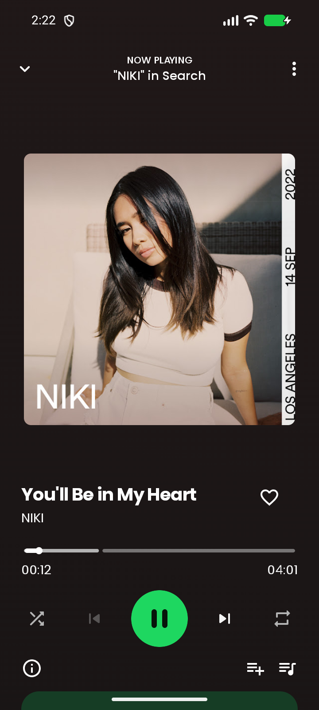
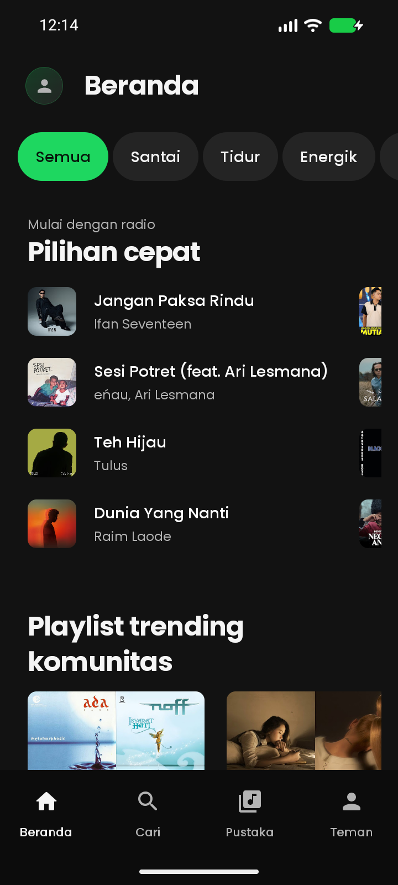
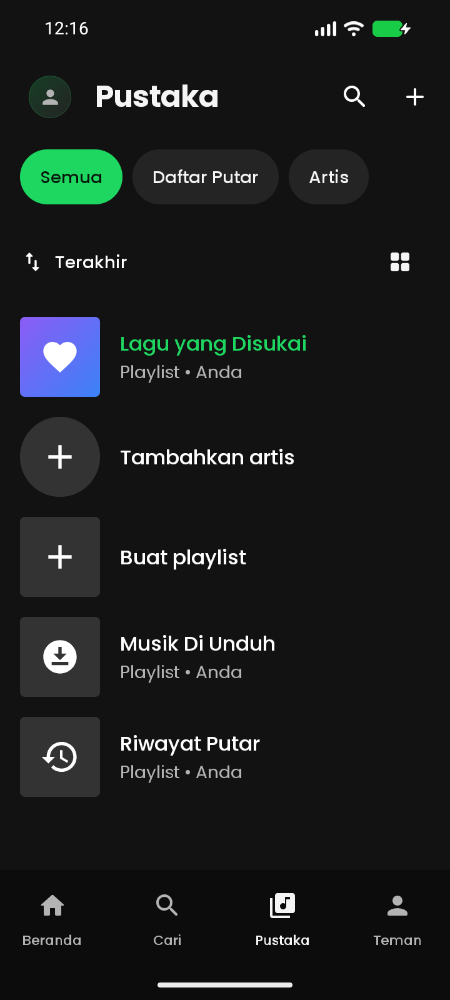

Putar tanpa
jeda iklan.
Dengarkan musik dari YouTube Music, termasuk saat layar mati atau kamu membuka aplikasi lain.
TEMUKAN RITMEMU
Dari lagu favorit sampai penemuan baru. Nikmati musik, lirik, dan playlist dalam satu tempat.



Geser untuk melihat tampilan aplikasi.
Semua yang kamu butuhkan untuk menikmati lagu. Dari menemukan musik sampai menyimpan yang paling kamu suka.
Dengarkan musik dari YouTube Music, termasuk saat layar mati atau kamu membuka aplikasi lain.
Lirik tersinkron mengikuti lagu yang sedang diputar. Nyanyi bareng jadi lebih mudah.
Simpan lagu favorit, susun playlist, dan kembali ke musik yang pernah kamu dengarkan.
Jelajahi playlist komunitas dan fitur sosial untuk menemukan sesuatu di luar kebiasaanmu.
Gratify adalah aplikasi musik independen yang dikembangkan dari proyek open source SimpMusic. Dibuat untuk memberi ruang bagi lagu favorit, penemuan baru, dan caramu mendengarkan.
Saat ini Gratify masih dalam tahap beta. Fitur dan pengalaman mendengarkan terus disempurnakan bersama komunitas.
Lihat proyek di GitHubBAWA MUSIKMU
Mulai mendengarkan dengan Gratify untuk Android.
Unduh APK dari rilis resmi proyek Gratify di GitHub.
Unduh APKLihat rilis terbaru & catatan pembaruanBeberapa hal sebelum kamu mulai.
Ya. Gratify adalah proyek gratis dan open source. Kamu bisa melihat kode sumbernya di GitHub.
Gratify adalah klien independen untuk YouTube Music. Musik dialirkan dari layanan sumbernya; proyek Gratify tidak menghosting katalog musik sendiri.
Ya. Buat akun atau masuk melalui pilihan login di aplikasi. Akun Gratify digunakan untuk menyimpan profil serta menghubungkan fitur sinkronisasi dan sosial.
Unduhan publik saat ini tersedia untuk Android. Versi desktop masih dikembangkan, dan belum ada unduhan untuk iPhone.
Gratify masih beta dan bergantung pada layanan YouTube Music, sehingga perubahan di layanan tersebut dapat memengaruhi pemutaran. Laporkan masalah melalui GitHub Issues atau email dukungan.
Punya masukan atau ingin ikut mengembangkan Gratify?
Hubungi kami